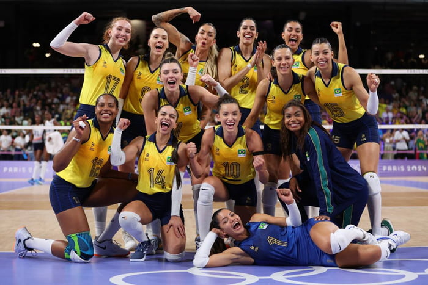

A competição do vôlei feminino teve início no dia 28 de julho na Arena Paris Sul, a principal sede do vôlei feminino durante os Jogos Olímpicos. Ao todo, foram realizadas 26 partidas, sendo 18 jogos de fase de grupos, realizados até o dia 4 de agosto. Os países que chegarem ao pódio irão disputar seis jogos no total.
As equipes participantes foram divididas em três grupos com quatro seleções cada. O formato é diferente dos últimos anos, quando eram dois grupos de seis equipes. Os dois primeiros colocados de cada chave, além dos dois melhores terceiros colocados no geral, avançam ao mata-mata, que se inicia a partir das quartas de final.
Com o fim da fase de grupos, as equipes avançarão para as quartas de final no dia 6 de agosto, com quatro confrontos diretos. Os confrontos das semifinais, marcados para o dia 8 de agosto, definirão as finalistas que disputarão o ouro olímpico.
No dia 10 de agosto, as equipes que não alcançarem a final disputarão a medalha de bronze. E, no dia 11 de agosto, o resultado que consagra a grande campeã olímpica do vôlei feminino das Olimpíadas de Paris 2024.
O vôlei feminino promete uma competição intensa e equilibrada, reunindo algumas das seleções mais fortes e experientes do mundo. Nos últimos anos, o cenário internacional tem sido dominado por um grupo.